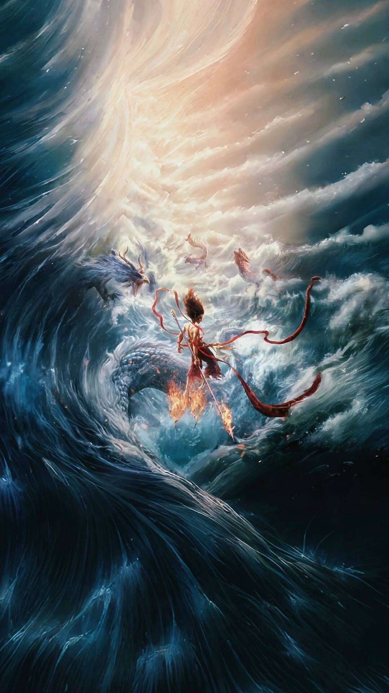
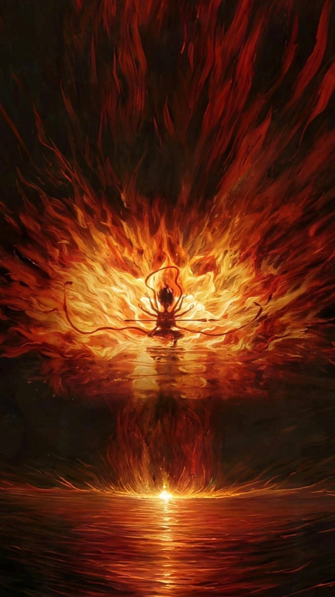
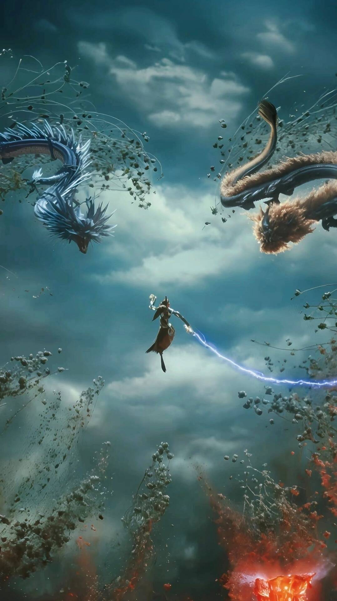

天劫过后，哪吒与敖丙虽灵魂尚存，但肉身濒临消散。太乙真人启动七色宝莲重塑肉身计划，却在关键时刻遭天庭神秘势力暗中破坏，不仅法阵被毁，连关键材料千年玄冰也不翼而飞。为救挚友敖丙，哪吒毅然踏上艰难修仙路，途中要闯过仙兽阻拦、幻境迷局等重重考验。
与此同时，四海龙王误以为敖丙已死，将怒火倾泻于哪吒与陈塘关，东海龙王敖光更是掀起遮天蔽日的惊涛骇浪，誓要将陈塘关夷为平地。而鹿童和鹤童带来的阐教升仙考验消息，成为复活敖丙的关键契机。面对仙界阴谋、龙族复仇与自我突破的三重挑战，哪吒能否在宝莲能量耗尽前完成蜕变，改写两人的命运？
经典镜头



情节梳理

点击图片可在新窗口中查看并缩放